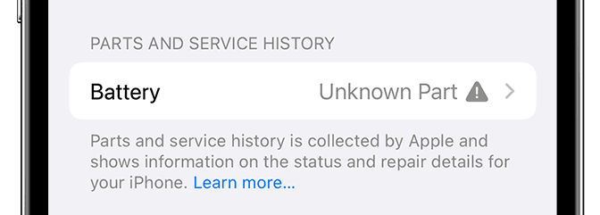
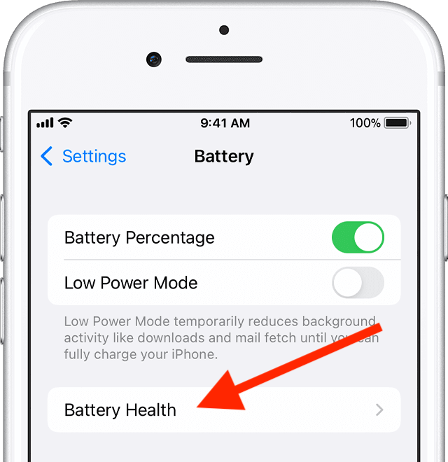
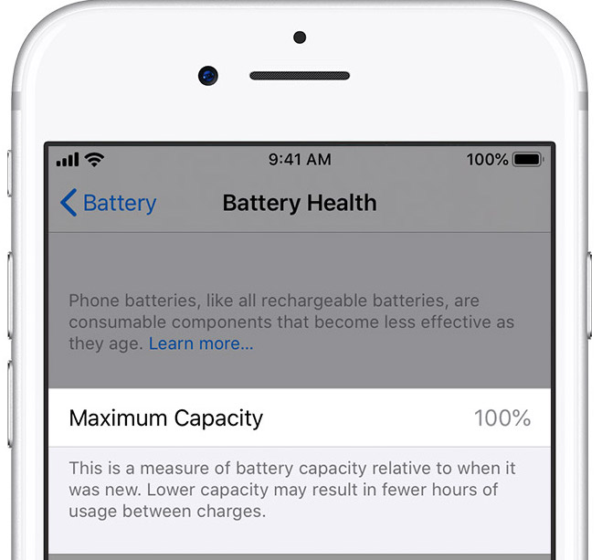

Go to settings → General → About → Retreive the iOS version
The latest iOS version will tell you if the battery is an official Apple battery or a third party one in Battery section
We advice you to avoid any third party batteries or pruchase them at your own risk

Go to settings → Battery → Battery Health → Retreive the Maximum capacity


|
|
|
|---|---|
| 100% | If the iPhone was not sealed and has been used but shows 100% battery life, that means that the battery has been changed recently. Ask the vendor if he has recently changed the battery or ask for the date of purchase with an invoice proof. A used iPhone will at least drop its battery health by 1%, take your precautions. |
| 95% - 99% | Excellent battery performance |
| 85% - 95% | Acceptable battery performance |
| 80% - 85% | Mediocre battery performance and the battery will die soon |
| under 80% | Please do not buy this iPhone unless you plan to replace the battery soon. Apple advises changing the battery when it is under 80%. |